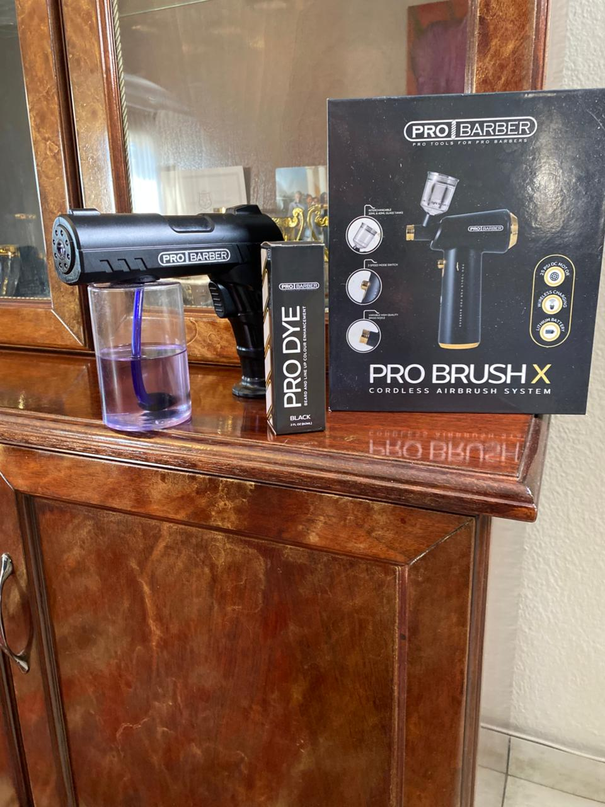

FADE
Clean transitions and sharp finishing tailored to your look.
PALMRIDGE • GAUTENG • SOUTH AFRICA
Precision. Style. Confidence.
Professional barbering with a personal touch — clean work, sharp detail and a confident finish.
Crosses & Clippers is the barbering brand of Davian Benjamin, built around precision, confidence, community and growth.
THE PERSON BEHIND THE CLIPPERS

A barber. A builder. A local business in the making.
Crosses & Clippers is founded by Davian Benjamin, with a goal of turning barbering into more than a service — a craft, a business and a source of confidence.
The story has also been recognised by the Alberton Record following support from Legends Barber founder Sheldon Tatchell.
READ MY STORY ↗WHAT WE DO
Clean transitions and sharp finishing tailored to your look.
Controlled detail around the edges with a clean, natural finish.
Precise hairline and beard detailing for a crisp finish.
Bring your reference, idea or design and make it your own.
THE PORTFOLIO


MY STORY
Crosses & Clippers began as a personal journey and grew into a business built on rebuilding, learning and giving people a reason to believe in what comes next.
According to the Alberton Record, Davian Benjamin reached out to businessman Sheldon Tatchell, founder of Legends Barber, for support as he rebuilt his barbering business in Eden Park.
Sheldon and his team supplied professional barbershop equipment and guidance on scaling the business. The article describes Davian's determination to rebuild his life and business, while highlighting the wider purpose behind the support: giving a barber the tools, confidence and hope to grow.
It also notes Fxde's give-back model, through which one clipper is donated to a barber in need for every ten sold.
READ THE FULL ALBERTON RECORD ARTICLE ↗GIVING BACK & SUPPORT
A focused gallery of the supplied Legends Barber sponsorship photographs and videos — presented as an interactive slideshow instead of a large wall of media.
COMMUNITY SUPPORT
Crosses & Clippers supports Saint Mary's Children's Home. Only photographs supplied specifically for Saint Mary's will be shown here.
SAINT MARY'S MEDIA SECTIONCLIENT FEEDBACK
SHARE YOUR EXPERIENCE
GET IN TOUCH
Book online and the exact appointment information you submit will be prepared for both WhatsApp and email.
APPOINTMENT
PRIVATE AREA